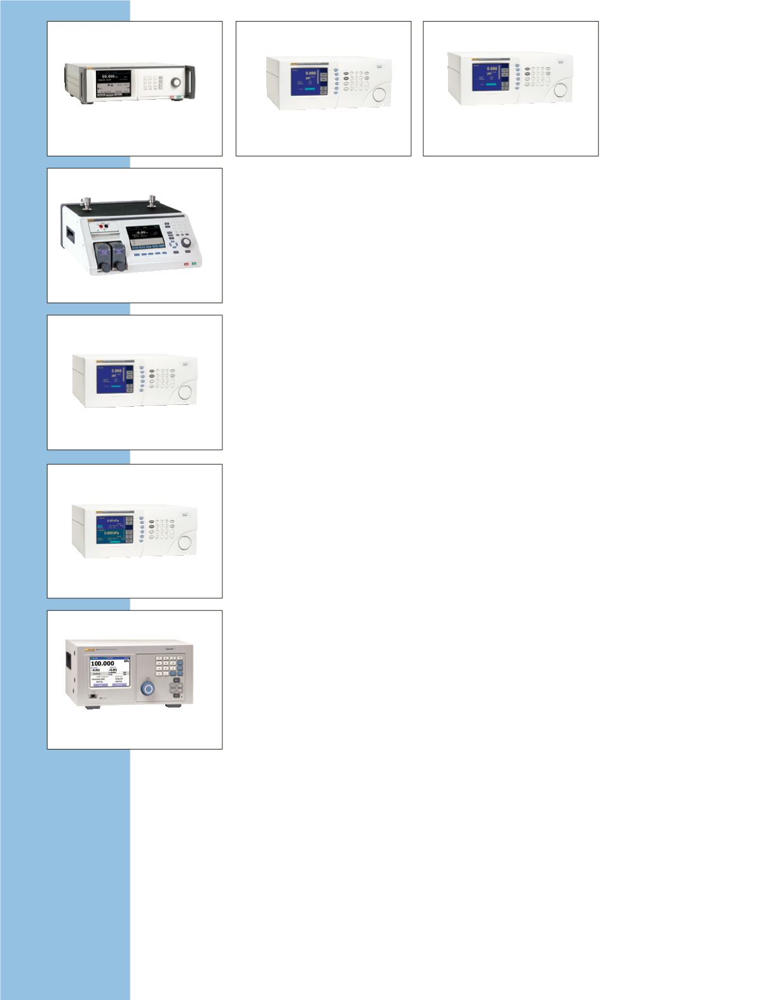

PG7601
PG7102
PG7000-AMH
PG7202
2465A
PG7302
2470
Kolbenmess-
geräte
Absolutdruck-
Gaskolbenmanometer PG7601
Gaskolbenmanometer mit
Vakuumreferenz zur Definition von
Absolutdrücken.
•
Gasdruck von 5 kPa bis
7 MPa (0,7 psi bis 1.000 psi)
Relativ- oder Absolutdruck
•
Onboard-Messung von
Testbedingungen, und
Echtzeitbereichnung sowie
Anzeige des Testdrucks
•
Kompatibel mit dem Druckregler
PPC4 und der automatischen
Massenauflage AMH-38
Gaskolbenmanometer PG7102
Gaskolbenmanometer mit
55 kg Masseauflage für einen
erweiterten Druckmessbereich von
Relativdrücken.
•
Gasdruck von 100 kPa
bis 11 MPa (15 bis 1.600 psig)
•
Onboard-Messung von
Testbedingungen, und
Echtzeitbereichnung sowie
Anzeige des Testdrucks
•
Kompatibel mit dem Druckregler
PPC4 und der automatischen
Massenauflage AMH-100
Hochdruck-
Gaskolbenmanometer PG7202
Gaskolbenmanometer mit
ölgeschmiertem Kolbenzylinder zum
Betrieb in Hochdruckgas oder -öl.
•
Gasdrücke von 100 kPa bis
110 MPa (15 bis 16.000 psig)
Öldrücke von 100 kPa bis
200 MPa (15 psi bis 30.000 psig)
•
Gasbetrieben,
flüssigkeitsgeschmiert, für
zuverlässige Bedienung und
niedrige Kolbensenkraten
•
Onboard-Messung von
Testbedingungen, und
Echtzeitbereichnung sowie
Anzeige des Testdrucks
•
Kompatibel mit dem Druckregler
PPCH-G und der automatischen
Massenauflage AMH-100
Kolbenmanometer PG7302
Ölkolbenmanometer zum Messen
von hohen Relativdrücken.
•
Öldrücke von 100 kPa bis
500 MPa (15 psi bis 75.000 psig)
•
Onboard-Messung von
Testbedingungen, und
Echtzeitbereichnung sowie
Anzeige des Testdrucks
•
Kompatibel mit dem Druckregler
PPCH und der automatischen
Massenauflage AMH-100
Automatische
Massehandhabung
PG7000-AMH
Automatische Massehandhabung
für Kolbenmanometer PG7000.
•
Zur gemeinsamen Verwendung
mit dem Kolbenmanometer
der Serie PG7000, um die
Druckprüfung im Überdruck-
oder Absolutmodus vollständig
zu automatisieren
•
Konstruiert und getestet, um
die zuverlässige, wartungsfreie
Funktionsfähigkeit über Jahre zu
gewährleisten.
•
Verringerung von Verschleiß und
mögliche Massewertänderungen,
die durch manuelle Massehan-
dhabung verursacht werden
Absolutdruck-
Gaskolbenmanometer 2465A
Das Gaskolbenmanometer ist für
sehr niedrige Drücke geeignet,
zur Definition von Über- und
Absolutdrücken.
•
Gasdruck von 1,5 kPa bis
7 MPa (0,2 psi bis 1.000 psi)
Relativ- oder Absolutdruck
•
Leichtgewichtiges, kompaktes
System mit kleinen Massen
für reduzierte Tischbreite,
Transportabilität und
ergonomische Massehandhabung
•
Kompatibel mit dem Autofloat-
Regler und WinPrompt sowie
COMPASS-Software
Gaskolbenmanometer 2470
Das Gaskolbenmanometer ist
für sehr niedrige bis sehr hohe
Relativdrücke geeignet.
•
Druckbereiche von
1,5 kPa bis 20 MPa (0,2 psi
bis 3.000 psig)
•
Leichtgewichtiges, kompaktes
System mit kleinen Massen
für reduzierte Tischbreite,
Transportabilität und
ergonomische Massehandhabung
•
Kompatibel mit WinPrompt- und
COMPASS-Software
32
Druckkalibrierung